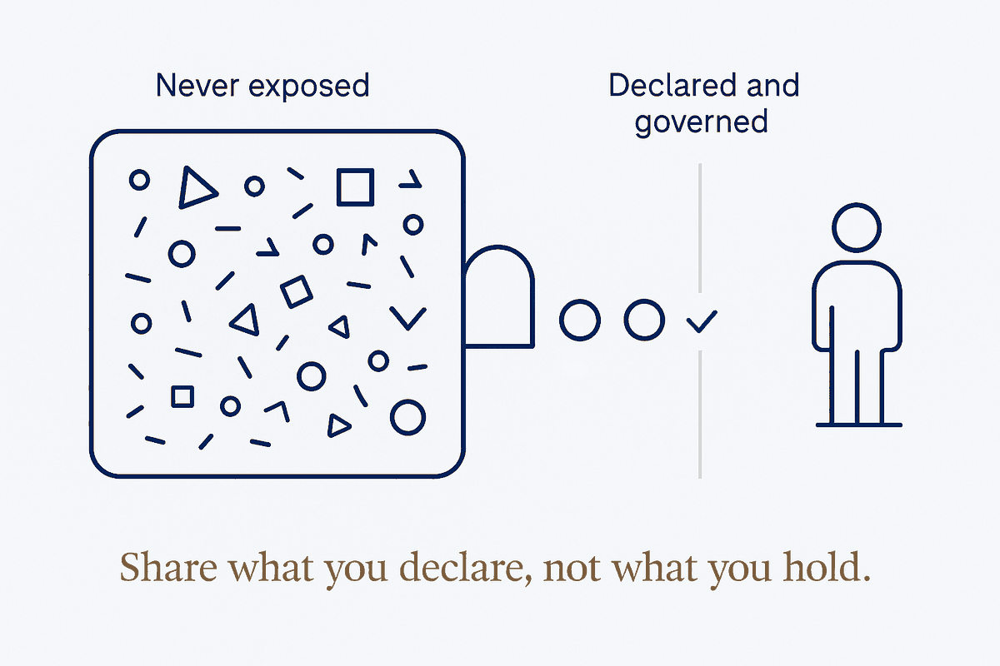

A node never exposes its vault — only a small, declared set of data it chooses to share, governed by rules, on request or on schedule.

A node never exposes its vault — only a small, declared set it chooses to share, governed by rules.
How a sovereign node shares without opening up. The vault is never readable from outside; instead the node exposes a front door — a deliberate, named set of tools/resources (e.g. an MCP server), each one governed by rules. Nothing crosses that isn't explicitly declared shareable. The default is private; sharing is opt-in, per item, per recipient.
The share/private declaration is the heart of it. Every piece of data carries its own sharing status — the vault's existing visibility: private (never leaves) and share: <target> (opt-in to a specific recipient) frontmatter, now doing double duty as the federation rule. The front door only serves what is declared shareable to this asker; everything else is invisible to them, not just denied. You state what's shared once, at the source, and every exchange honours it.
Access is on request (the other party's agent pulls a named tool — get_shared_trips(since=…)) or periodic (a scheduled validated publish), never direct file access and never "read everything". Outbound validation runs at the door: does this match its contract, are private fields actually stripped, is anything leaking. Flag, don't send on mismatch.
The inbound counterpart is The validated exchange layer; the whole federation of front doors is Federated brains; the node behind the door is a Sovereign personal system.